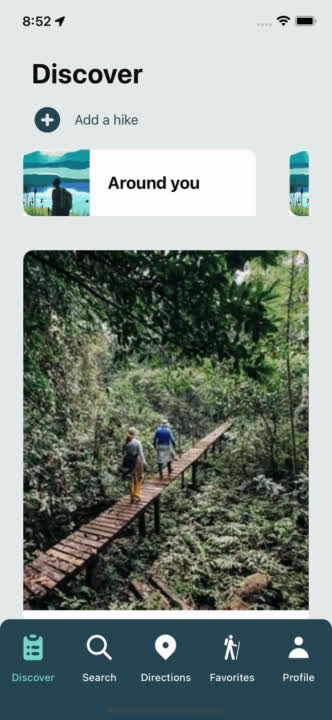
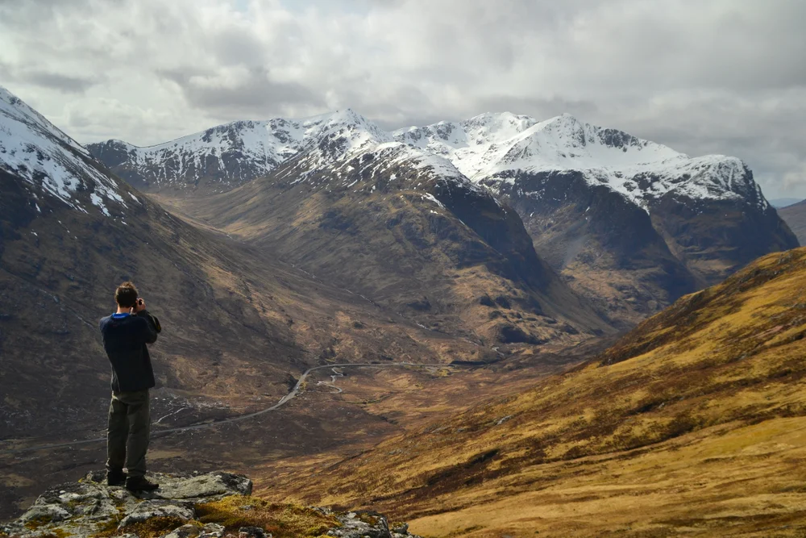
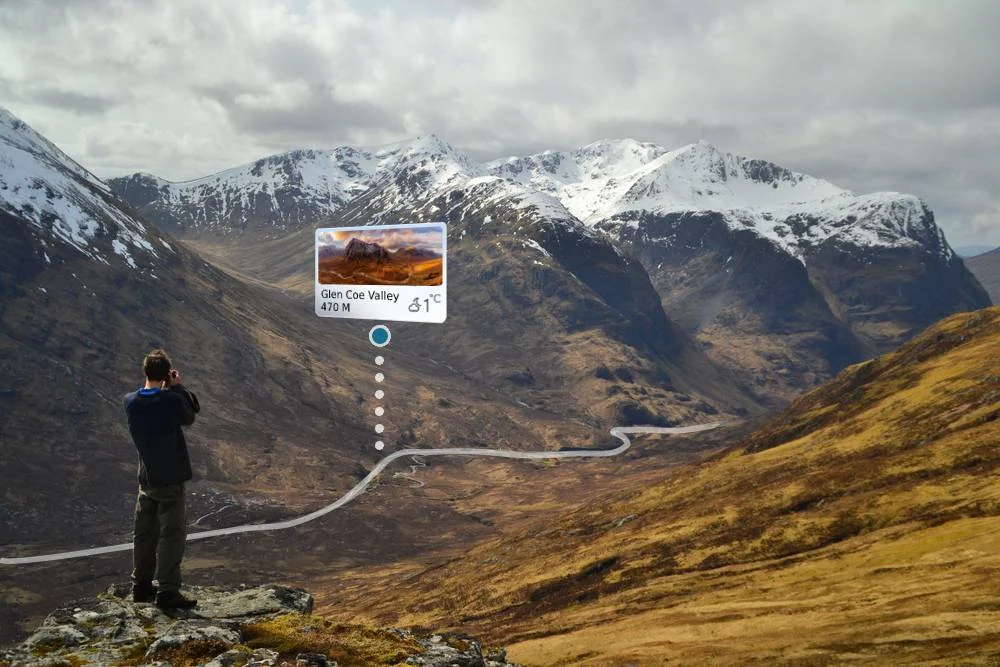
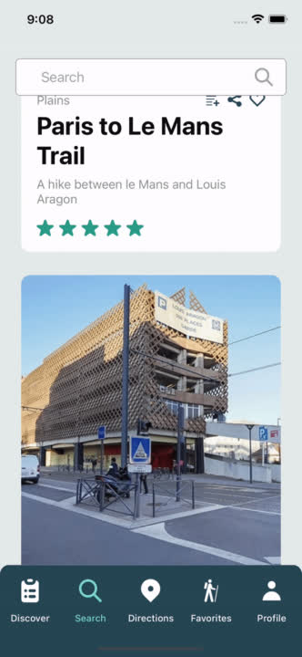
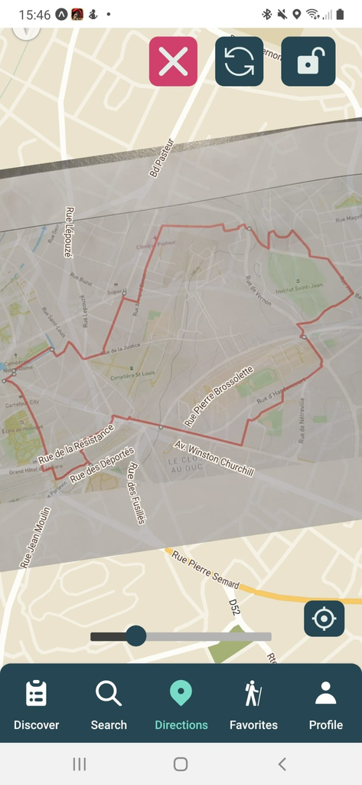
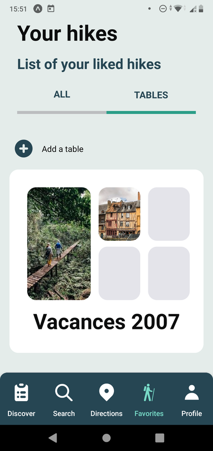

GET READY TO EXPLORE THE WORLD
All hikes of the world in your pocket.
Let Gotò be your copilot
With just a picture of your hiking map, Gotò lets you see your position on your phone as you follow the trail.
A route on a sign, a map from a guidebook, or a hike that isn’t in the catalogue: keep your map with you and find your bearings along the way.


Inside Gotò



Browse suggested hikes and find somewhere new to explore. See the details, read reviews, and get a closer look at the route before heading out.
Open a hike to see its description, photos and reviews. Take a closer look at the route before heading out, or save it for another day.
Bring a photograph of your hiking map and see your position as you follow the trail. Keep a familiar map with you, even when the route is not in the catalogue.
Save hikes and organise them in collections. Keep the routes you want to revisit together, ready for your next outing.
Download Gotò
FAQ
How can I use Gotò?
Discover hikes, save your favourites, or add a photograph of your hiking map to follow your position along the trail.
Can I save hikes for later?
Yes. Add hikes to your favourites and organise them in collections, so you can find them again when you’re planning your next outing.
How does the map feature work?
Add a photograph of a hiking map and use it alongside your position. The landscape comparison above illustrates the idea: a familiar map with your route in view.
Where can I find out more?
Gotò is a student project created at EFREI Paris. The source code is available on GitHub. For questions, contact dev@deway.fr.